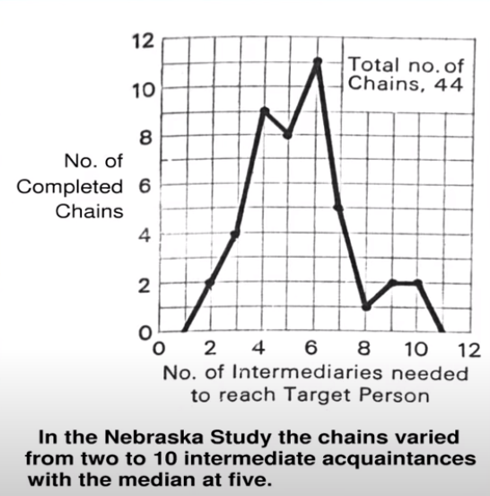
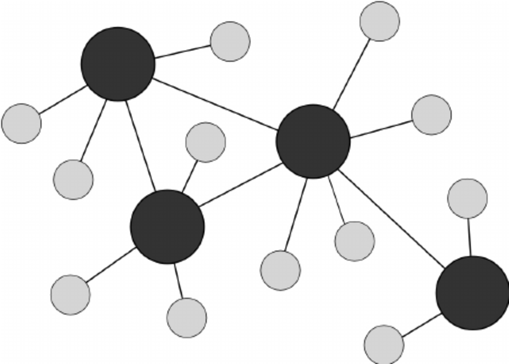
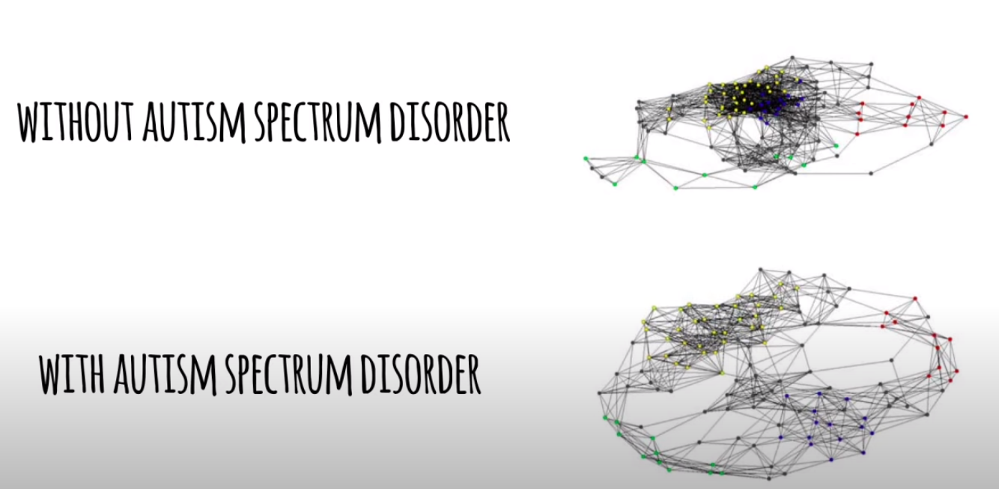
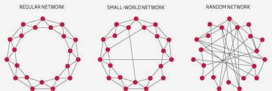
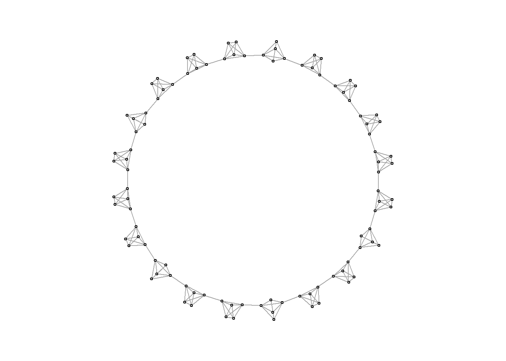
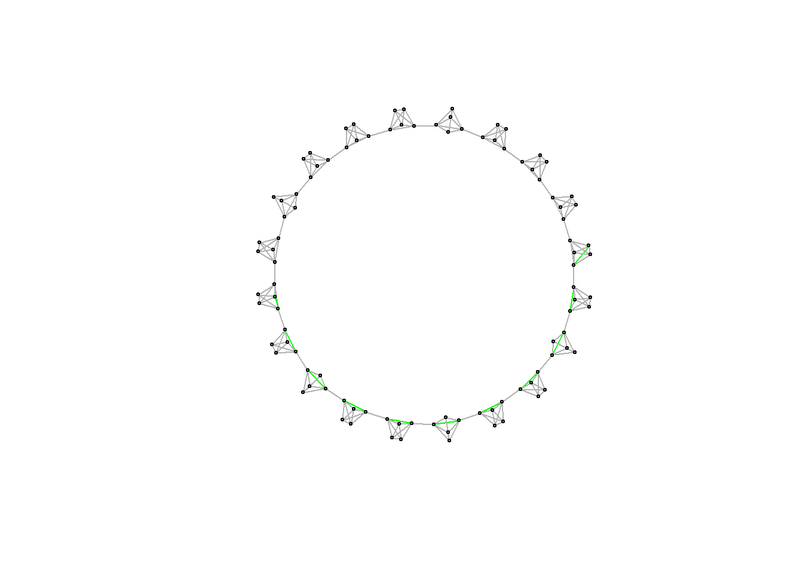
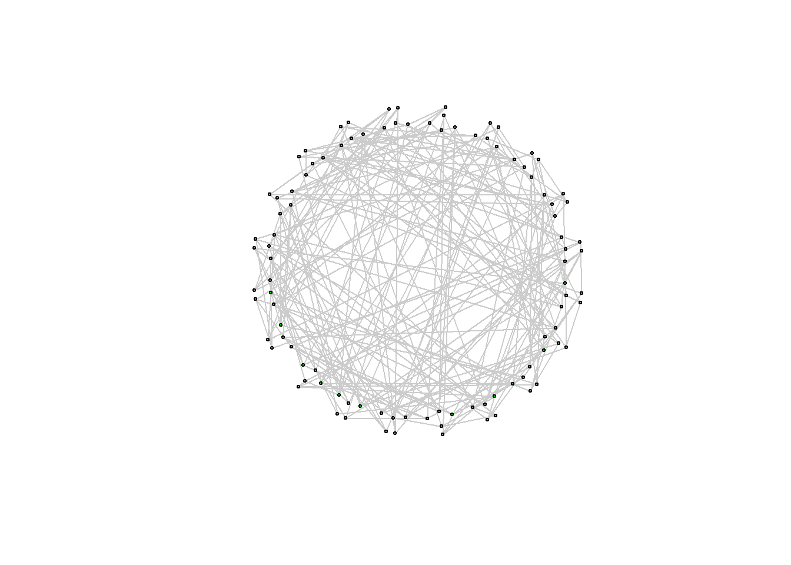
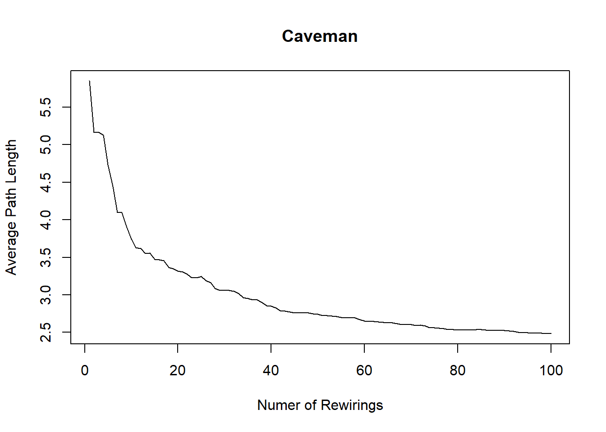
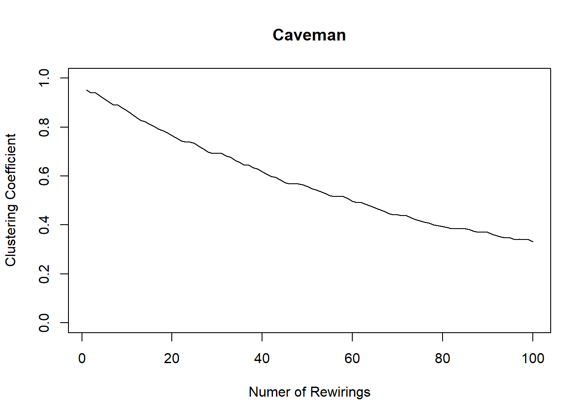

Chapter 7 Small World / Weak Ties
7.1 It’s a small world!
대통령한테 편지를 전달하고 싶다. 아는 사람들의 연결망을 통해서 전달해야 한다고 할 때, 몇 단계를 거치면 내 편지가 도달할까?
1950년에 미국의 유명한 사회심리학자 스탠리 밀그램은 “좁은 세상 현상(small world phenomenon)”을 계량하기 위한 실험을 진행했다. 이 실험에서 타겟 노드는 밀그램의 지인인, 보스턴에 거주하는 한 주식 브로커였다. 밀그램은 네브라스카 주에 거주하는 농부들을 모집하였다. 이 농부들은 타겟과 물리적으로도 거리가 멀 뿐만 아니라, 사회적으로도 거리가 있었다. 네브라스카 농부들은 자신들이 잘 아는 지인(=허브)을 통해서 보스턴의 주식 브로커에게 편지를 전달해야 했다. 실험 결과는 아래의 그림과 같다.
knitr::include_graphics("images/41.png")
x축은 타겟 노드에 도달하기까지 거쳐간 사람들의 명수를 의미한다. 중위값은 5였다. 즉, 최초의 네브라스카 농부까지 포함하면, 평균적으로 6번의 점프로 보스턴 주식 브로커에 도달할 수 있다는 것이다. 여기서 그 유명한 ’six degrees of separation’이라는 단어가 나왔다.
이 실험은 small world 네트워크의 특성을 잘 보여준다. Small world 네트워크에서는 길이가 긴 링크(거리가 먼 사람들 간 직접적으로 연결된 링크)는 몇 개 없지만, 비교적 길이가 짧은 경로를 통해 - 주로 hubs 거쳐서 - 서로서로 연결된다.
흥미로운 지점은 대부분의 real-world complex 네트워크가 이러한 small world 특성을 지니고 있다는 것이다. 던컨 왓츠와 스티븐 스트로가츠는 네이쳐지에 “Collective dynamics of ‘small-world’ networks” 라는 제목의 논문을 출판했다(Watts and Strogatz, 1998).
그들은 다음 세 가지의 real-world 네트워크에 주목했다:
- 영화배우 네트워크: 노드는 영화배우, 만약 배우들끼리 같은 영화에 출현하면 연결됨
- Power grid: 노드는 발전소, 링크는 transmission이 있으면 연결됨
- C.elegans: C.elegans라는 지렁이의 뇌 뉴런이 노드고, 시냅스로 연결되면 연결됨
이러한 실제 존재하는 복잡한 네트워크들은 어떤 구조를 가지고 있을까? 가장 단순한 구조 두 가지로 생각해 볼 수 있겠다. 첫 번째는 완전히 규칙적인 네트워크(regular network)이다. Regular 네트워크에서는 모든 노드가 각자의 두 이웃 노드들까지 연결되어 있다. 한 노드에서 랜덤한 다른 노드까지 이동하는데 평균 거리가 멀고, 평균적으로 군집화 정도도 높다. 두 번째는 그 반대 편에 있는, 완전히 랜덤한 네트워크(random network)이다. 평균 연결성은 regular 네트워크와 같지만, 서로 무작위로 연결되어 있다. 랜덤 네트워크에서는 평균 거리와 군집화 정도 모두 낮다.
그렇다면 실제 네트워크들은 (1) regular, (2) random 네트워크 중 어느 것과 비슷한 구조를 가질까? 왓츠와 스트로가츠의 분석에 따르면, 실제 네트워크 구조는 regular와 random 네트워크 둘 다 해당하지 않았다. 대신에, 평균 거리는 낮지만 평균 군집화 정도는 높은 “small world” 네트워크 구조에 가깝웠다. 허브 노드를 통해 서로 몇 단계만 거치면 연결되는 small world 구조는 hubs and spokes 구조라고도 불린다.
knitr::include_graphics("images/43.png")
실제로 항공 노선 네트워크, power grid 네트워크, 월드 와이드 웹 인터넷 네트워크 등 실생활에서 볼 수 있는 네트워크들은 거의 다 small world 네트워크 구조에 해당한다. Small world 네트워크의 중요한 속성을 표현하자면, ’최소한의 연결(minimum number of connections)로 최대한의 연결성(maximum connectivity)’이라고 할 수 있다. 따라서 굉장히 효율적이다.
우리의 뇌도 small world 네트워크를 따른다. 어린 아이들의 뇌는 랜덤 네트워크 형태에 가까운데, 나이가 들수록 효율적인 rewiring을 통해 small world 네트워크에 가까워진다.
knitr::include_graphics("images/44.png") 정리하면, 현존하는 많은 네트워크는 small world 네트워크 구조를 따른다.
knitr::include_graphics("images/42.png")
이번 장의 실습에서는 Watts와 Strogatz의 small world 시뮬레이션을 따라할 것이다.
7.2 좁은 세상 시뮬레이션
실제 존재하는 소셜 네트워크는 small worlds에 가깝다. 좁은 세상에서는 사람들이 그룹으로 clustered 되어 있으면서, 동시에, 평균적으로는 사회적으로 가깝다(socially proximate). 예를 들어, 당신은 랜덤한 인도 거주민과 사회적으로 거리가 멀다고 느낄 수 있지만, 몇 단계를 거치면 해당 거주민에 도달할 수 있다. 그 인도인은 자신의 좁은 세상에 살고, 당신 또한 당신의 좁은 세상에 살지만, 그럼에도 불구하고 서로 도달 가능하다. 이러한 현상을 “좁은 세상”이라고 부른다. 던칸 와츠(Duncan Watts)는 그의 유명한 페이퍼에서 이 현상에 대해 설명한다. 그는 가장 clustered 된 “caveman” 구조를 가진 네트워크에서 출발한다. Clustered 된 사람들의 집단이 있고, 다른 집단으로 하나 또는 두 개의 연결고리가 있는 상태를 caveman 구조라고 한다.
simulate_caveman <- function(n = 25, clique_size = 5){
require(igraph)
# Groups are all the same size, so I check whether N is divisible by the size of groups
if ( ((n%/%clique_size) * clique_size) != n){
stop("n is not evenly divisible by clique_size")
}
groups = n/clique_size # this determines the number of groups
el <- data.frame(PersonA = 1:n, Group = NA) # I create a dataframe which has people and the groups they are in
# I treat it like a person to group edgelist
group_vector = c()
for (i in 1:groups){
group_vector <- c(group_vector, rep(i, clique_size))
}
el$Group <- group_vector
inc <- table(el) # I use the table function to turn the person to group edgelist into an incidence matrix
adj <- inc %*% t(inc) # And I use matrix multiplication with the transpose to turn the person to group incidence matrix
# into a person to person adjacency matrix
diag(adj) <- 0
g <- graph.adjacency(adj, mode = "undirected") # I graph this matrix
group_connect <- seq(from = 1, to = n, by = clique_size) # I determine the points of connection using a sequence function
for( i in 1:(length(group_connect)-1)){
p1 <- group_connect[i] + 1
p2 <- group_connect[i+1]
g <- add.edges(g, c(p1,p2)) # And I connect the points of connection using add.edges
}
g <- add.edges(g, c(group_connect[1],(group_connect[groups]+1))) # finally I connect the ends of the structure so that it forms a circle
return(g)
} 위 함수는 호프만 교수가 직접 짠 함수로, caveman 구조 시뮬레이션을 가능케한다. 다 이해할 필요는 없다. 함수의 인자(arguments)는 두 가지이다: 노드 개수(n)와 집단 규모(clique_size). 집단 규모(clique_size)는 4 또는 10으로 바꿀 수 있다.
caveman_net <- simulate_caveman(n = 100, clique_size = 5)
par(mar = c(2,2,2,2))
plot(caveman_net, layout = layout.kamada.kawai(caveman_net), vertex.size = 2, vertex.label = NA, vertex.color = "grey80")
이것이 바로 caveman 구조이다. 이 네트워크 구조를 분석해보자. 참고로 이행성(transitivity)은 클러스터링 계수를 측정한다. 즉, 네트워크가 전체적으로 얼마나 뭉쳐있는지를 보여주는 값이다.
transitivity(caveman_net) ## [1] 0.7894737average.path.length(caveman_net)## [1] 10.70101caveman 구조 네트워크는 전반적으로 상당히 낮은 밀도(density)를 갖는다. 왜냐하면 대부분의 노드들이 파벌(clique) 내에서만 서로 연결되어 있거나 단 한 개의 연결고리(tie)로 다른 파벌과 연결되어 있기 떄문이다. 반대로 말하면, 파벌 내에서는 밀도가 굉장히 높고 상당히 뭉쳐 있다.
경로의 길이 또한 매우 크다. 평균적으로 하나의 노드에서 다른 랜덤한 노드로 갈 때 10번의 스텝이 필요하다. 실제 사회에서는 우리가 시뮬레이션을 돌릴 때 설정했던 100명의 사람들과 20개의 파벌(파벌 크기가 5이므로)보다 더 많은 사람들과 파벌이 있기 때문에, 평균 degree of separation 가 6~7이라는 게 더욱 놀랍다. 결론적으로 caveman 구조는 small world가 아니다.
이 네트워크 구조의 지름도 구할 수 있다. 지름은 가장 긴 최단 경로이다.
nodes_diameter<-get.diameter(caveman_net)
edges_incident <- get.edge.ids(caveman_net, nodes_diameter)
V(caveman_net)$color<-"grey60" # Set default color for nodes
V(caveman_net)[nodes_diameter]$color<-"green" # Set the nodes on the diameter to be green
E(caveman_net)$color<-"grey70" # Set default edge color
E(caveman_net)[edges_incident]$color<-"green" # Set the edges on the diameter to be greenplot(caveman_net, layout = layout.kamada.kawai(caveman_net), vertex.size = 2, vertex.label = NA) Watts는 이 네트워크 구조에서 시작하여, 평균 경로 길이가 훨씬 작은 네트워크로 이동하고자 했다. 그러기 위해서 네트워크를 랜덤하게 rewire 하여, 점점 (낮은 평균 경로 길이를 갖는) 랜덤 네트워크에 근접하도록 실험하였다.
따라서 몇 개의 엣지를 rewire하여 네트워크를 가로지르도록 하였다. 이때 rewire() 함수를 사용하면 되고, keeping_degseq() 함수를 통해 연결의 분포(degree distribution)가 바뀌지 않도록 설정한다. 또한 랜덤으로 rewiring할 때 반복 횟수(number of iterations)는1000으로 설정하였다.
caveman_net_rewired <- rewire(caveman_net, keeping_degseq(niter = 1000))시각화를 하기 위해 rewired된 caveman 네트워크의 엣지와 노드 색상을 구분해준 후 그려보자.
E(caveman_net_rewired)$color <- "grey80"
V(caveman_net)$color <- "grey60"
plot(caveman_net_rewired, layout = layout.kamada.kawai(caveman_net), vertex.size = 2, vertex.label=NA)
대부분의 rewirings이 네트워크 구조를 가로지르도록 되었음을 확인할 수 있다.
caveman 네트워크와 비교해보자.
graph.density(caveman_net) ## [1] 0.04444444transitivity(caveman_net) ## [1] 0.7894737average.path.length(caveman_net)## [1] 10.70101graph.density(caveman_net_rewired) ## [1] 0.04444444transitivity(caveman_net_rewired) ## [1] 0.03552632average.path.length(caveman_net_rewired)## [1] 3.305859밀도(density)는 바뀌지 않았다. 클러스터링 계수(transitivity)와 평균 경로 길이는 감소하였다.
Rewirings을 하면서 나타는 변화를 살펴보자.
caveman_net_rewired <- simulate_caveman(n = 100, clique_size = 10)
avgpathlength <- average.path.length(caveman_net_rewired) # These are the first observation
clusteringcoefficient <- transitivity(caveman_net_rewired)
iter = 100
for ( i in 2:iter){
caveman_net_rewired <- caveman_net_rewired %>% rewire(keeping_degseq(niter = 1))
avgpathlength <- c(avgpathlength, average.path.length(caveman_net_rewired)) # We are just appending the result to a vector
clusteringcoefficient <- c(clusteringcoefficient, transitivity(caveman_net_rewired))
}
plot(1:100, avgpathlength, xlab = "Numer of Rewirings", ylab = "Average Path Length", main = "Caveman", type = "l")
lines(1:100, clusteringcoefficient)
plot(1:100, clusteringcoefficient, xlab = "Numer of Rewirings", ylab = "Clustering Coefficient", main = "Caveman", type = "l", ylim = c(0,1))